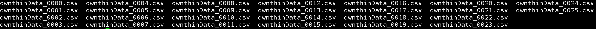
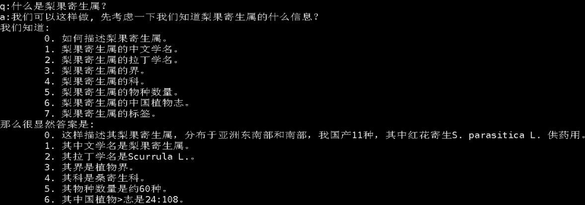

{kind=link}
{kind=link}
{kind=link}
{kind=link}
Q&A 数据
做法：拼接三元组构造 QA，再 shuffle。
提取码 kbge
数据档案 · 脚本清洗 · GitHub Pages
High-quality Chinese Q&A dataset — a static data showcase, not an in-browser runtime.
此项目通过清洗 ownthink_v2 知识图谱三元组，构造 Q&A 数据以及 Prompt QA 多轮 CoT 数据，用以助力中文 LLM。本页只做说明与样例核验，不提供在线推理、检索或下载代理。
原始材料是 ownthink_v2 知识图谱三元组。README 写到：若做成 Neo4j 数据库，基本等价于简易版的百度百科或维基百科。字段在 README 截图里可见为「实体 / 属性 / 值」。

ownthinData_xxxx.csv 分片。来自 README「原始数据 Example」。
原图
README 同时指出问题：有些特殊的关系与实体难以构造通顺语句，这项工作需要更细致的清洗；但不影响作者将其视为高质量知识库数据集。脚本侧也能看到分片、去空值和按实体聚合等处理，但仓库没有发布「已洗净条数」。
下列步骤按 dataclear/ 现有脚本归纳，不是另写的新流水线。路径在源码里是作者机器上的绝对路径，克隆后需要自行改路径才能跑通。
data_load.py / data_load2.pydata_load.py 读取 ownthink V2 分片并写成 tab 分隔文件，另有 Neo4j 风格实体 / 关系导出（entity:ID、:START_ID、relationship、:END_ID）。脚本注释写明切分处理内存约 318.3814、按 16G 内存切片。data_load2.py 按 100 万行分块读取「实体 / 属性 / 值」，写出 entity 与 relationship CSV。
mearge_data.py把同目录下多个 CSV 追加合并。文件名保持仓库原拼写。
clear_qa_data.py跳过表头和不足三列的行；实体名里的 [类型] 会拆出。关系为「描述」时问「如何描述 X？」，答「这样描述 X …。」；其他关系问「X 的 Y 是什么？」，答「X 的 Y 是 Z。」写出 q: … a: …。积满约 10 万条后打乱并追加写入。这与 README「拼接三元组数据构造 QA 数据，再 shuffle」一致。
clear_强化_data.py按实体聚合多条属性，生成「什么是 X？」——先列出已知信息，再写「那么很显然答案是」及对应答句。「描述」「标签」有单独句式。真实文件里换行和制表符被写成字面量 \\n 与 \\t。
shuffle_Data.py / util.pyREADME 提供 1 轮与 50 轮 shuffle 的下载包。shuffle_Data.py 对 QA 文本行做 shuffle；util.py 按 CPU 核数切分并行。另有 test.py 用于统计关系名频次，同样依赖本地绝对路径。
只使用 README 里原有的四张示例截图，以及 README 逐字给出的梨果寄生属 CoT 文本。不另造问答。
句式与 clear_qa_data.py 的「X 的 Y 是什么 / X 的 Y 是 Z」模板一致。

下面两段同一条样本：整理版便于阅读，原始版按 README 逐字保留（含「中国植物>志」换行痕迹）。
q:什么是梨果寄生属？ a:我们可以这样做, 先考虑一下我们知道梨果寄生属的什么信息？ 我们知道: 0. 如何描述梨果寄生属。 1. 梨果寄生属的中文学名。 2. 梨果寄生属的拉丁学名。 3. 梨果寄生属的界。 4. 梨果寄生属的科。 5. 梨果寄生属的物种数量。 6. 梨果寄生属的中国植物志。 7. 梨果寄生属的标签。 那么很显然答案是 0. 这样描述其梨果寄生属，分布于亚洲东南部和南部，我国产11种，其中红花寄生S. parasitica L. 供药用。 1. 其中文学名是梨果寄生属。 2. 其拉丁学名是Scurrula L.。 3. 其界是植物界。 4. 其科是桑寄生科。 5. 其物种数量是约60种。 6. 其中国植物志是24:108。 7. 梨果寄生属的标签可以是自然,生物物种,植物。
q:什么是梨果寄生属？\n a:我们可以这样做, 先考虑一下我们知道梨果寄生属的什么信息？\n 我们知道:\n\t0. 如何描述梨果寄生属。\n\t1. 梨果寄生属的中文学名。\n\t2. 梨果寄生属的拉丁学名。\n\t3. 梨果寄生属的界。\n\t4. 梨果寄生属的科。\n\t5. 梨果寄生属的物种数量。\n\t6. 梨果寄生属的中国植物志。\n\t7. 梨果寄生属的标签。\n那么很显然答案是\n\t0. 这样描述其梨果寄生属，分布于亚洲东南部和南部，我国产11种，其中红花寄生S. parasitica L. 供药用。\n\t1. 其中文学名是梨果寄生属。\n\t2. 其拉丁学名是Scurrula L.。\n\t3. 其界是植物界。\n\t4. 其科是桑寄生科。\n\t5. 其物种数量是约60种。\n\t6. 其中国植物>志是24:108。\n\t7. 梨果寄生属的标签可以是自然,生物物种,植物。\n
数据包放在百度网盘，由 README 给出提取码。仓库本身是脚本与说明，不是可在浏览器运行的数据集运行时。
做法：拼接三元组构造 QA，再 shuffle。
提取码 kbge
Q&A & Cot Prompt 数据，1 轮 shuffle。
提取码 fw69
Q&A & Cot Prompt 数据，50 轮 shuffle。
提取码 ctou
克隆仓库后阅读 dataclear/。入口脚本含绝对路径与作者环境假设，需按本机数据位置修改后再运行。
| 脚本 | 从源码可见的用途 |
|---|---|
data_load.py |
ownthink V2 分片读写；可选 Neo4j 实体 / 关系导出 |
data_load2.py |
百万行分块转 entity / relationship CSV |
mearge_data.py |
合并 CSV 分片 |
clear_qa_data.py |
三元组模板化为 q: / a: 问答 |
clear_强化_data.py |
按实体聚合，生成带已知信息清单的 CoT Prompt |
shuffle_Data.py |
打乱 QA 文本行 |
util.py |
按 CPU 核数并行 |
test.py |
统计关系名频次 |
这是数据与脚本仓库的说明页。它不能代替数据包本身，也不能在浏览器里复现清洗或微调。
dataclear/ 脚本。若要一起贡献，README 欢迎发邮件至 294957500@qq.com。原文写：「此诚存亡之秋,期望大家一起努力构建中文数据集」。